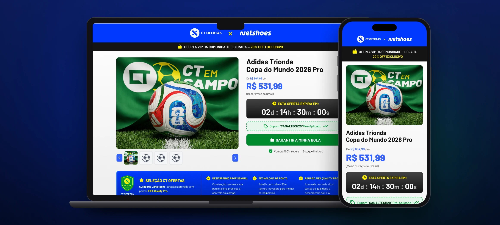
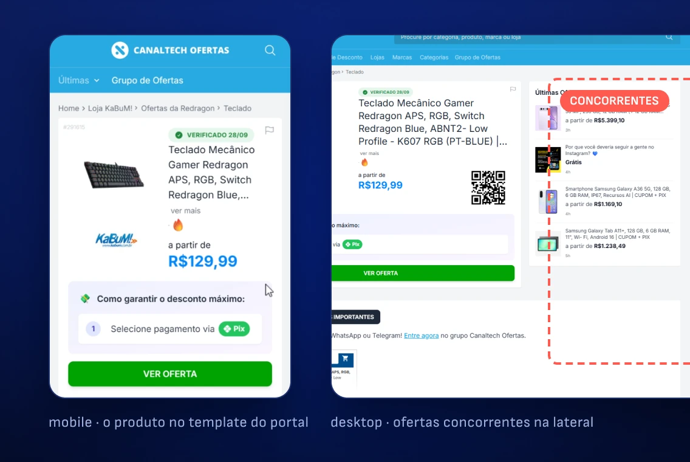
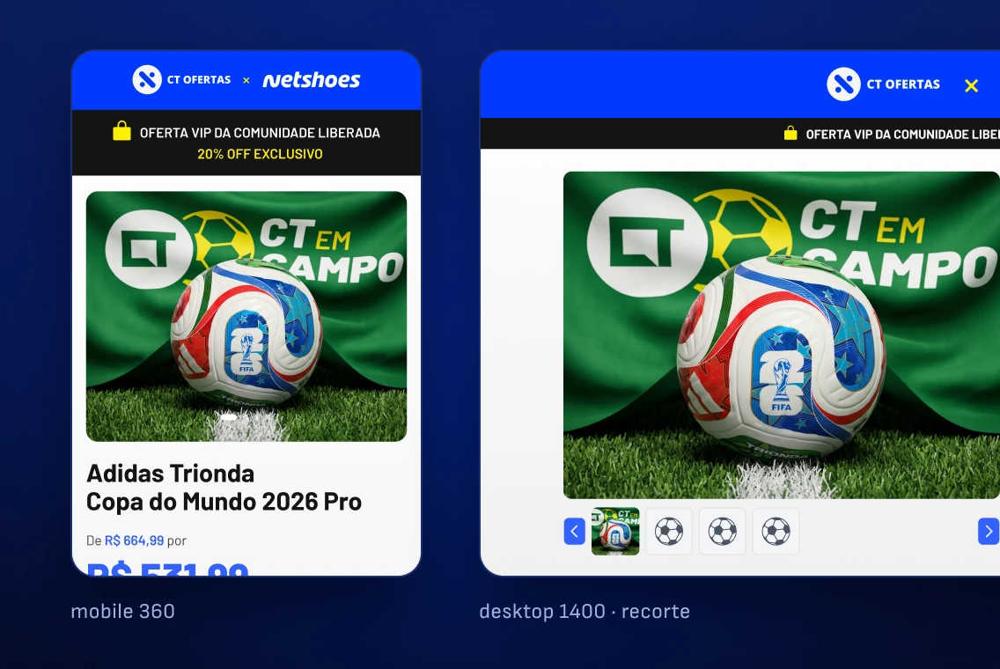
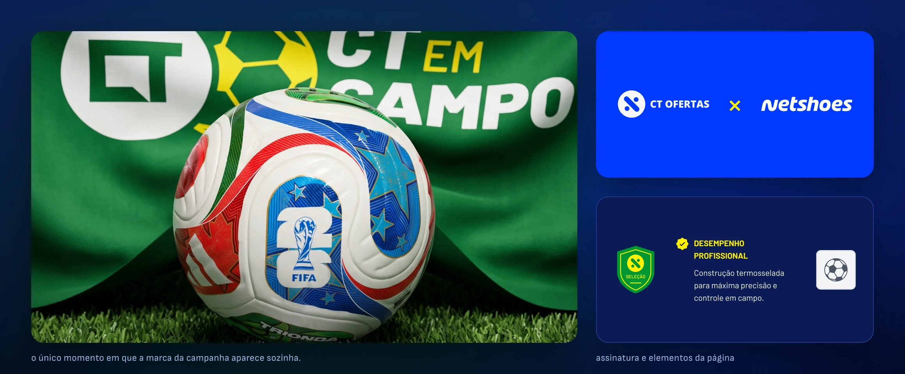
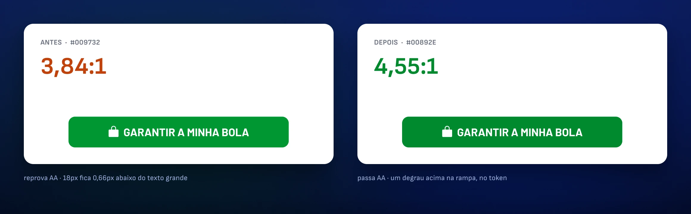
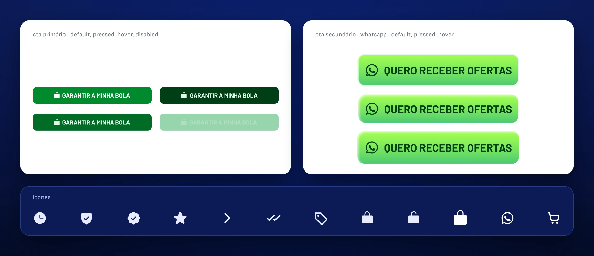
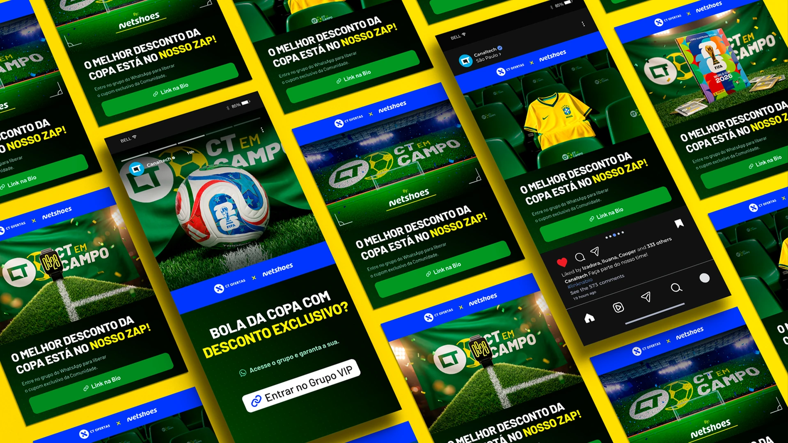
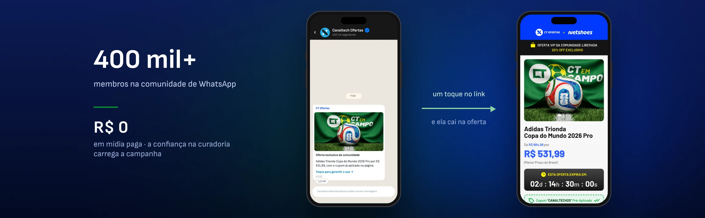

REAL PROJECT · DESIGN SYSTEM, MOTION AND CODE · 15 DAYS, SOLO
A sponsor buys attention. The shared portal gives it away for free.

Canaltech sold a World Cup activation to Netshoes, and the available format was the portal template — with ads, recommendations and competing brands sharing the screen. I replaced it with a dedicated surface. I made the campaign brand, the key visual, the assets, the design system, the motion and the front-end. It became the house’s standard format.
About the numbers.
Campaign delivered and published. What’s measured here is the product — contrast, tokens, scope, deadline. I don’t have Netshoes’ conversion data, and section 06 says so explicitly instead of estimating.
CLIENT
Canaltech × Netshoes
sponsored activation
ROLE
Design system
and design engineer
DELIVERABLES
Brandbook · UI · design system
motion · front-end
MADE WITH
Claude Code ⇄ Figma via MCP
After Effects · Higgsfield
PERIOD
2026 · 15 days
solo
01 · THE PROBLEM
The page existed. The exclusivity didn’t.
CT Ofertas runs on a portal template: network ads, recommendations, a competitor right next to you. Good for discovery, bad for selling exclusivity.
18
touchpoints across social, video and web
15
days between briefing and handoff
1
designer, with no front-end team on the other side
R$ 0
in paid media to drive traffic there
02 · BEFORE AND AFTER
The redesign wasn’t aesthetic. It was structural.
The same goal — buying the sponsored product — down both paths. What goes away isn’t decoration: it’s the detours that lead the reader off the page.

BEFORE · SIX STEPS
Arrives through the deal link · finds the product in a list with others · passes network ads and a competing brand · looks for the coupon, which is somewhere else · leaves for the e-commerce site and applies the coupon there · buys, or gives up at one of the detours.
Steps 3, 4 and 5 are exits. Each one is a door out of the campaign the sponsor paid for.

AFTER · THREE STEPS
Arrives on a surface that belongs only to the sponsor · sees price, deadline and the coupon already applied on the same screen · buys through the fixed CTA, without searching for anything.
No step offers a way out. The coupon comes pre-applied, navigation is fixed on mobile and the countdown keeps the deadline in view.
03 · CONSTRAINTS
The screen decisions came from the contract, not from taste.
Three commercial constraints defined the surface before a single pixel existed. They explain why the page has the shape it has.
Exclusivity is the product
If the sponsor bought the screen, nothing third-party gets on it — no network ads, no recommendations, no competing brands. That removes entire modules from the standard template, and it’s why the page is a single column.
The format has to work for the next sponsor
A piece tailor-made for Netshoes would be disposable. Everything brand-specific became a variable, with two modes, and the structure became independent of whoever fills the space.
There’s no front-end team on the other end
The delivery had to ship finished, not specified — which pushed the decision to tokenize the system to mirror the CSS from the start.

04 · SYSTEM
I found a contrast bug in the CTA and fixed it in the token, not the button.
Typography and color defined as a scale, not piece by piece — that’s what keeps eighteen touchpoints looking like the same campaign without me reviewing them one by one.

01
The bug. The primary CTA failed WCAG AA at 3.84:1 — green on white only passes at that value for large text.
02
The fix. I moved the brand token one step up the ramp, to 4.55:1, and shifted the hover along with it to preserve the relationship between states.
03
The reach. Applied to both brand modes: the next sponsor inherits the fix instead of the bug.
3.84:1
CTA contrast as it was
4.55:1
after the token fix
56px
primary touch target, above the 48 guideline
2
brand modes inheriting the fix

Five stages. The first two can’t be delegated.
Media contract and art direction are judgment calls and stay with me — they define the surface and the constraints every following stage inherits. System, generation and handoff are throughput, and they’re why an entire activation ships in fifteen days instead of six weeks. MCP connects Claude Code and Figma in both directions, so the design system is the single source of truth on both sides: no value is retyped, and what arrives at the other end is a working page — with a live countdown, carousel, coupon and sticky bar — not a document to interpret.
05 · REACH
The page is the destination. Getting there was the other half of the work.
With no media budget, what takes someone to the product is recognition. Every format came from the same tokens and the same motion language.


Consistency here isn’t portfolio polish. It’s the function.
Whoever finds the campaign on Reels needs to recognize it instantly on the deal page, because there’s no paid media reinforcing the path. A yellow card turning into a transition wipe is football vocabulary doing editing work — and it’s the same yellow as the token in the page’s CSS.
06 · NUMBERS
What can be measured, and what I don’t have.
Anyone can check the product numbers by opening the file or the inspector. The business ones I don’t have, and I’d rather say so than estimate.
1:1
tokens mapped to CSS, no value retyped
18
assets delivered across 6 placements
15
days from briefing to handoff, solo
0
third-party modules on the page
REACH, NOT RESULTS
570K+ followers · 400K+ members · R$ 0 in paid media.
These are audiences, not conversions — the size of the channels where the campaign circulated, not how many people bought. I don’t have access to Netshoes’ e-commerce side, so there’s no conversion rate on this page. The result I can state is internal: after this campaign, Canaltech adopted the format as the reference model for sponsored activations with any partner brand. It stopped being a one-off piece and became a product.
What I didn’t solve.
The format was approved as the standard and is ready for two brand modes, but it ran with only one sponsor — proof that it’s reusable only exists when the second brand comes in without me touching the system. I delivered the page without instrumenting conversion on my side, which is exactly the question a sponsor asks. The countdown is the campaign’s, not the partner’s stock. And the image generation is AI-assisted; that’s written here and not in the product — someone arriving through the campaign has no way of knowing. It’s a one-line fix and it should be there.
07 · MORE
Other projects
ThumbDrop
An internal tool that took thumbnails out of the design team’s queue. Two versions tested with six people each, AI inside the editor, and the cost per thumbnail visible before every click.
Nega Nagô
A braider’s catalog became booking without leaving WhatsApp. Research, design system and front-end — live at neganago.com, with availability coming straight from her calendar.
Available for work
I design, I write the code, and I tell you what didn’t work.
Thirteen years in design, five of them at Canaltech across design systems, marketing and sales. If you have a surface that needs to ship finished and measured, not just specified, get in touch.
© 2026 Erick Teixeira
oerickteixeira@gmail.com · São Paulo